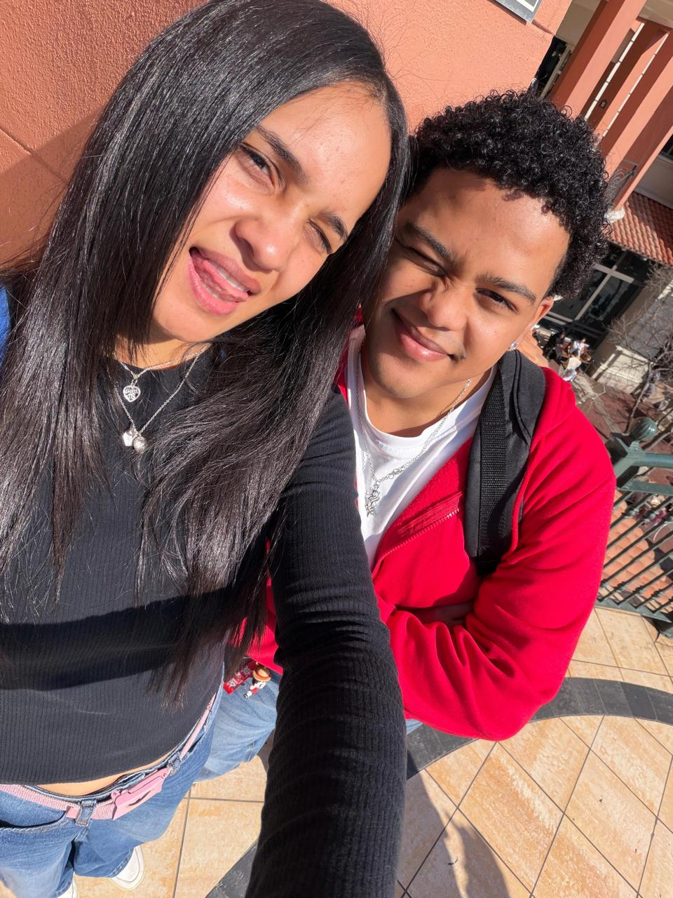
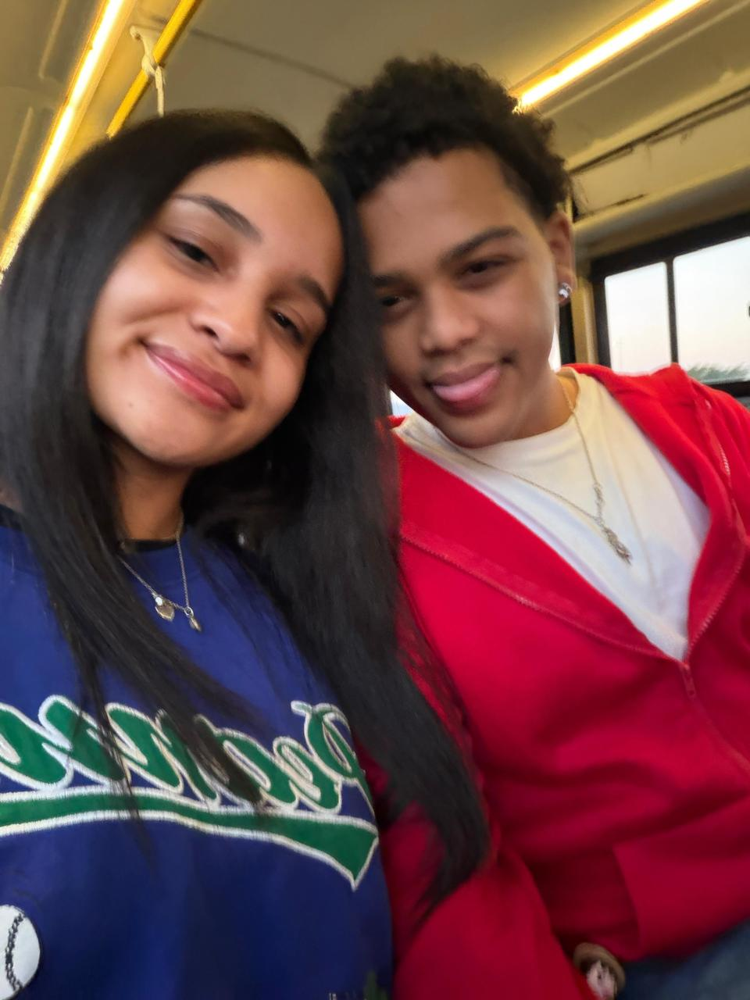
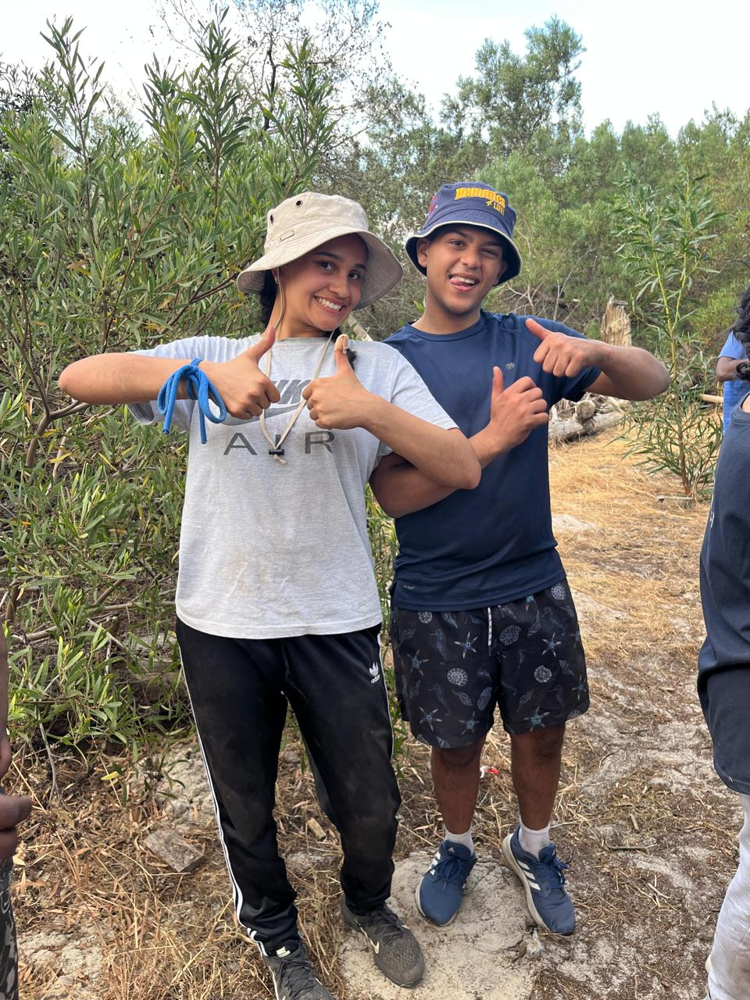
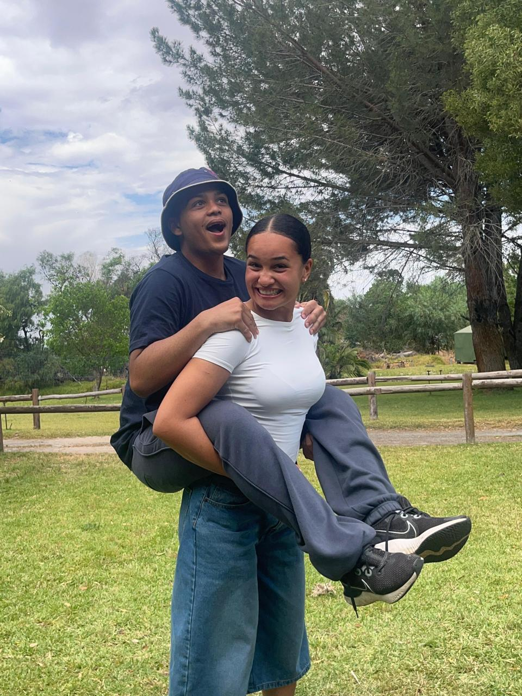
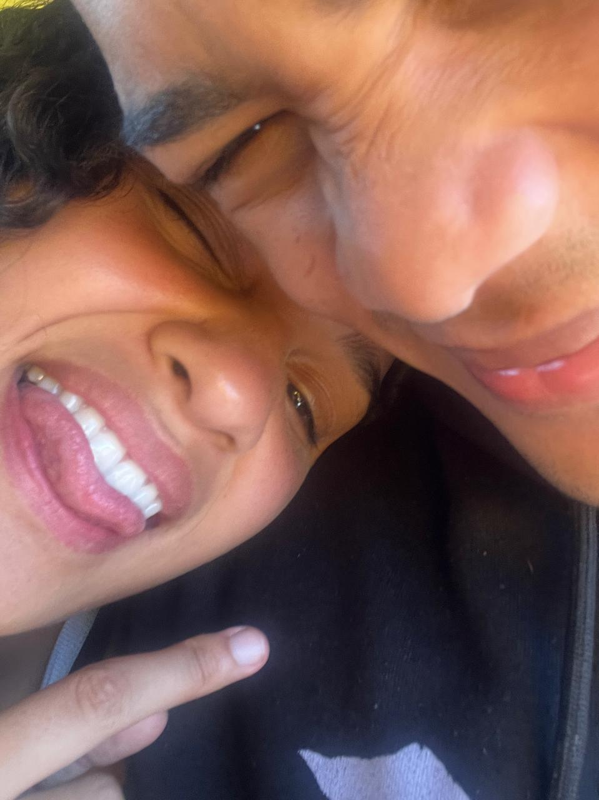
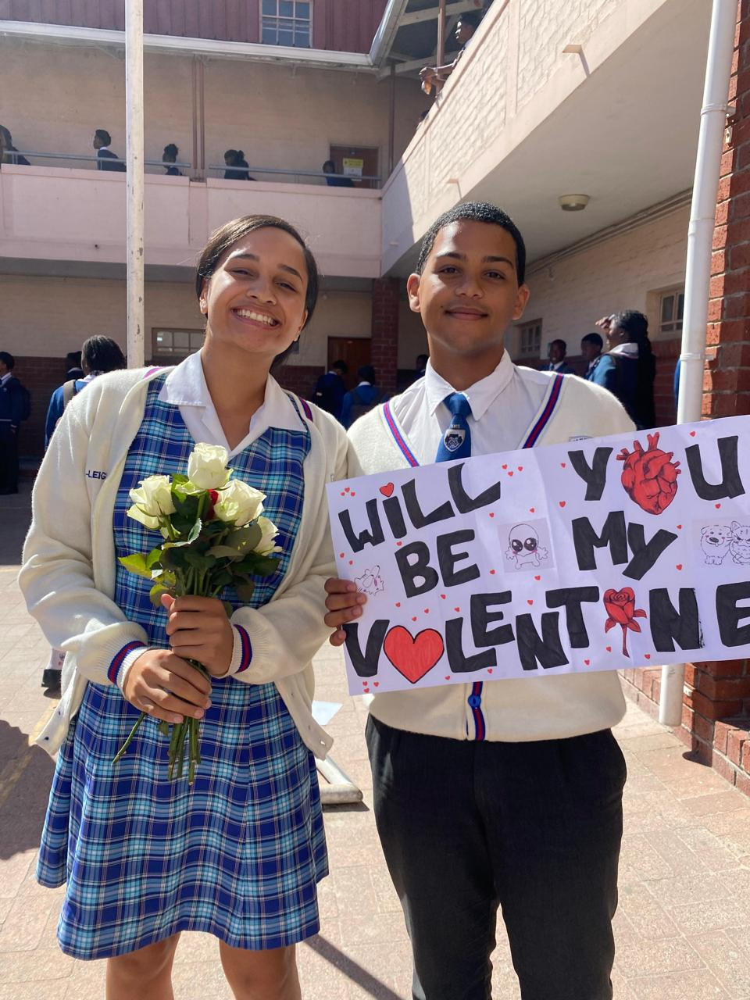

A LITTLE LOOK BACK
Our Memories ♡
Before we look ahead...
let's look back.


01
Remember this?
A lot was happening during this time, and even through all those difficulties, we still managed to make each other happy. Watching the new Spider-Man movie was fun, but watching it with you was an experience for me because I got to see a different Chyler that day. The way you watch movies, with so much empathy, taking the deeper meanings and applying them to your own life, is something I’ll always remember. I will never forget holding your hand as the scenes got tense, or the amount of times you squeezed my hand. The glances I gave you throughout the movie... It really was a good movie, but honestly, it was breathtaking watching you. No matter what we may go through, in the end, we always seem to find our way back to each other, and that, even to this day, makes me extremely happy. May we never grow apart, and may we always pursue each other, even when times are hard and we may feel angry or upset with one another. I will always hope that those moments are short-lived, because nothing will ever beat the long and everlasting time I hope to spend with you throughout my life. ♥



02
And then there was this...
It’s been almost a year already, and because of you, I can still remember camp so vividly. From the walks, the talks, holding hands, cuddling, giving you my hoodie, the laughs, and simply working together while being on the same team. I remember how we would unintentionally match, and how one night we just sat down, keeping each other warm, sad that camp was soon coming to an end, talking through the night. It’s funny, I don’t remember being cold. I just remember how warm it felt being next to you. Camp was really a time where we could both fall in love and just be young teens, free from the watchful eyes of adults. Just young love. The bus ride back home was the best, just cuddling next to you while talking. It wasn’t anything extravagant, but when I’m with you, it somehow feels like everything. I hope that in the future, we can go camping, just the two of us, so we can relive our teenage romance and maybe feel youthful again, since we’ll both be much older by then. ♥

03
One of my favourites.
You might wonder, “Bruen, how the hell is this your favourite memory?” Well, a clumsy, very nervous Bruen would tell you that, to him, this moment was everything. I remember how extremely nervous I was to ask you to be my Valentine for the first time. I was literally SOOO scared that you would say no to me. I always used to think that I had nothing going for me. Until I met you. “How can someone be so confident and happy, and make so many friends with such ease? I wish I could be myself without having to fake trying.” You really inspired me to find my truest self. No matter what happens, I will always be grateful for having you in my life. To repay the person who brought happiness back into me, I want to spend an eternity with you, giving you the same happiness you gave me. So, why is this my favourite memory? It’s because I would never have proposed to you in public like that if it wasn’t for you. The Bruen before you would never have done something like that. He probably wouldn’t have even talked to you, because of how scared he was. You changed me, for the better. All of this happened because of you. You could say it all came full circle and landed right back on you, so there really was no escape from the start. Nonetheless, thank you, Chyler-Leigh Hannie, for making me able to do things like that with confidence. Thank you for believing in me, and thank you for cheering me on all those times before we were even a thing. You really don’t know how indebted I am to you. But that’s why I love you. You’re always a step ahead of me, pushing me toward a version of myself I never knew I could become. ♥
And somehow...
we're still making more. ♡
but there's something I want you to see...